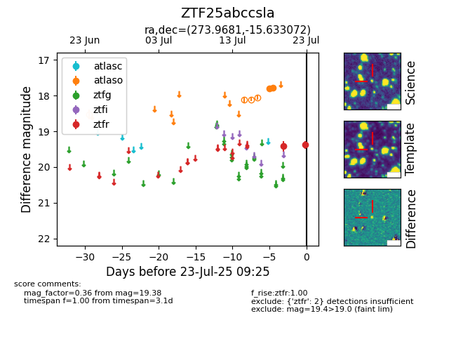

Target ZTF25abccsla at 2025-07-23 11:48, see:
FINK: fink-portal.org/ZTF25abccsla
Lasair: lasair-ztf.lsst.ac.uk/objects/ZTF25abccsla
ALeRCE: alerce.online/object/ZTF25abccsla
alt names
ZTF25abccsla (ztf,fink)
coordinates:
equatorial (ra, dec) = (273.9681,-15.63307)
galactic (l, b) = (15.0103,+0.54965)
photometry
last atlaso=17.78, ztfr=19.38
2 atlaso, 2 ztfr detections
